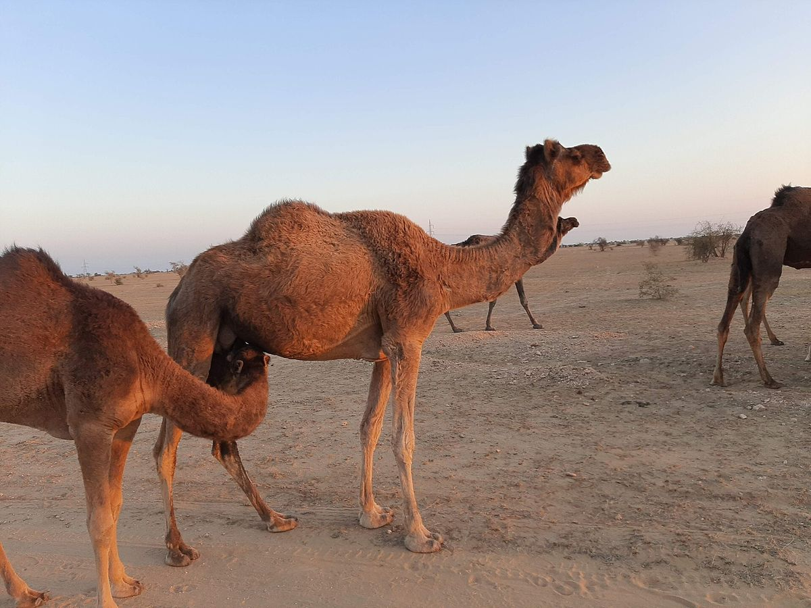
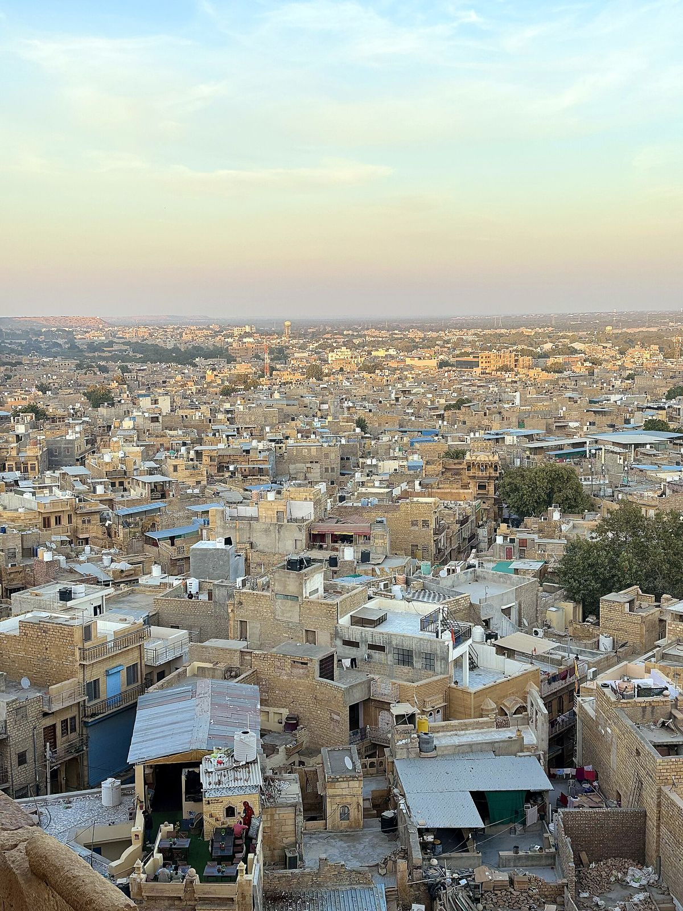
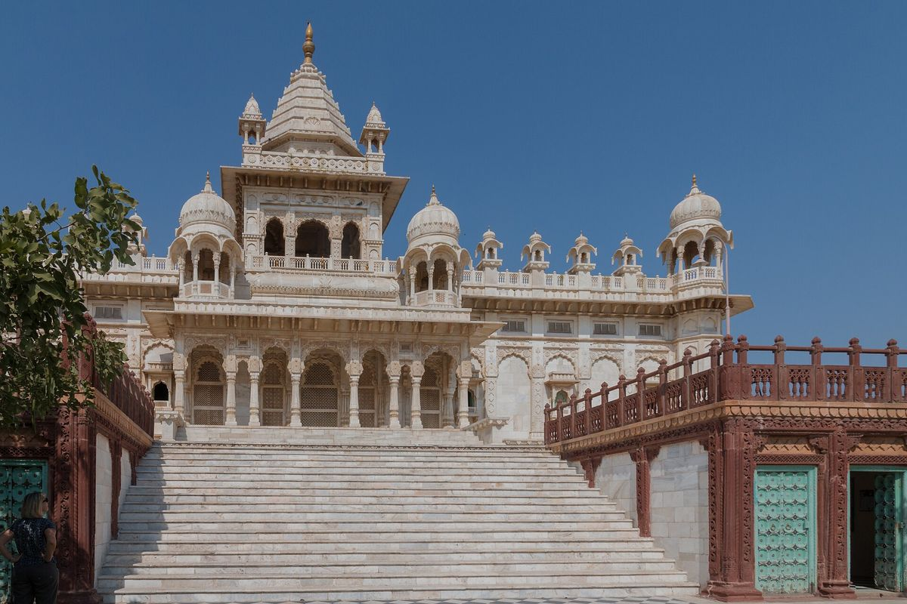

Rajasthan
Jaisalmer & Jodhpur
A golden fort, desert dunes, the Blue City
- 5N / 6D
- Travel style: Family
- 3 hotel stays
- Delhi ✈start
- Jaisalmer2N
- Sam Dunes1N
- Jodhpur2N
Day by day
-
- Morning: Arrive at Jaisalmer Airport where your private driver will greet you and transfer you smoothly to your hotel in the Golden City. Enjoy a warm welcome breakfast, drop off your luggage, and refresh.
Afternoon:
Begin exploring the magnificent Jaisalmer Fort (Sonar Qila), a living desert fortress built from intricate yellow sandstone that houses vibrant homes, local shops, and ancient Jain temples.
Stroll through the winding lanes to admire Patwon Ki Haveli, a stunning cluster of five historical townhouses renowned for their delicate stone traceries.
Visit Salim Singh Ki Haveli, famous for its distinctive peacock-bracketed roof architecture.
- Evening: Wrap up your day witnessing serene sunset views over the water shrines and ghats at Gadisar Lake.
- Night: Return to your city hotel for a relaxing dinner and your first night's stay in Jaisalmer.
-
Morning: Enjoy a hearty breakfast at your city hotel.
Head out to explore the eerie, fascinating abandoned ghost town of Kuldhara Village, steeped in generations of local folklore and legend.
Visit Bada Bagh, a peaceful desert garden complex housing striking royal cenotaphs carved from yellow sandstone.
- Afternoon: Discover the region's heroic military history by visiting the acclaimed Jaisalmer War Museum or the Desert Cultural Centre & Museum.
- Evening: Spend a leisurely evening shopping for authentic leather goods, mirror-work textiles, and yellow sandstone trinkets inside the bustling artisan markets of the fort lanes.
- Night: Head back to your city hotel for dinner and your second night's stay in Jaisalmer.
-
- Morning: Enjoy breakfast at your city hotel, complete your check-out, and take some time for final morning leisure in the city.
- Afternoon: Drive out towards the famous Sam Sand Dunes and check into your luxury desert camp.
Experience an adventurous afternoon featuring an exciting camel ride across the rippling sand dunes.
Feel the adrenaline rush with high-speed quad biking across the desert tracks.
- Evening: Immerse yourself in a traditional Rajasthani cultural evening featuring live folk music, energetic dance performances, and a warm bonfire under the open desert sky.
- Night: Relish a delicious traditional dinner at the camp and stay overnight in your luxury desert tent.
-
- Morning: Catch a magical sunrise over the desert dunes, enjoy a hearty breakfast at the camp, check out, and take a scenic eastward drive toward the Blue City of Jodhpur (with an optional en-route stop at Osian to see ancient sun temples).
- Afternoon: Upon arrival in Jodhpur, check into your hotel to freshen up. Head out to explore Machia Biological Park, a lush wildlife habitat home to native desert foxes, deer, leopards, and lions.
- Evening: Proceed to the peaceful Kalyana Lake, a historic 19th-century artificial reservoir offering serene walking paths and breathtaking sunset views over the water.
- Night: Head back to your Jodhpur hotel for dinner and your first night's stay in the Blue City.
-
- Morning: Enjoy breakfast at the hotel before setting out on a comprehensive heritage tour of Jodhpur's crown jewels.
Explore the colossal Mehrangarh Fort, towering over the city on a rocky hill with expansive museum galleries, royal courtyards, and panoramic city viewpoints.
Visit Jaswant Thada, a pristine white-marble royal memorial surrounded by tiered gardens, often called the Taj Mahal of Marwar.
- Afternoon: Marvel at the grand architecture and royal heritage of Umaid Bhawan Palace, a magnificent blend of museum and active royal residence.
Discover the geometric precision and deep stone tiers of Toorji Ka Jhalra, a beautifully restored 18th-century stepwell.
- Evening: Stroll through the vibrant local markets around the historic Ghanta Ghar (Clock Tower) to shop for traditional spices, handicrafts, and textiles. Experience a short camel safari or traditional tonga ride around the old clock tower perimeter if desired.
- Night: Return to your hotel for dinner and your second night's stay in Jodhpur.
-
- Morning: Enjoy a leisurely final breakfast at your hotel and complete your check-out procedures.
Spend your morning exploring the historic Mandore Gardens, featuring the ancient capital of Marwar, striking rock-cut wall reliefs of Hindu deities, grand temple ruins, and weathered royal cenotaphs.
- Afternoon: After wrapping up your sightseeing and picking up any last-minute souvenirs, your private driver will provide a direct transfer to Jodhpur Airport for your return flight home.
Where you'll stay
- City Hotel, Jaisalmer or Similar
- Dune Safari Sam Desert Camp, Jaisalmer or Similar
- Rajputana Palace, Jodhpur or Similar
What's included
Included
- Airport & Arrival Transfers: Dedicated, air-conditioned vehicle for seamless pick-up from Jaisalmer Airport on Day 1 and a comfortable final drop-off at Jodhpur Airport on Day 6.
- Intercity & Sightseeing Transportation: Air-conditioned vehicle at your disposal for all daily city transfers, heritage tours, intercity drives from Jaisalmer to Jodhpur, and desert excursions as outlined in the itinerary.
- All Vehicle-Related Expenses: Complete coverage of all fuel charges, professional driver allowances, highway tolls, state road taxes, and parking fees throughout the trip.
- Comfortable Accommodation: Carefully selected city hotel stays in Jaisalmer and Jodhpur, plus 1 night in a luxury Swiss tent camp at the Sam Sand Dunes on a twin-sharing basis.
- Daily Dining: Delicious daily breakfast and dinner throughout your entire 6-day journey (Days 1 through 6), including the traditional dinner at the desert camp.
- Comprehensive Sightseeing: Full itinerary coverage with planned visits to Jaisalmer Fort, Patwon Ki Haveli, Salim Singh Ki Haveli, Gadisar Lake, Kuldhara Village, Bada Bagh, Jaisalmer War Museum/Desert Cultural Centre, Machia Biological Park, Kalyana Lake, Mehrangarh Fort, Jaswant Thada, Umaid Bhawan Palace, Toorji Ka Jhalra, Ghanta Ghar markets, and Mandore Gardens.
- Desert & Adventure Experiences: Pre-arranged traditional camel safari across the sand dunes, high-speed desert quad biking, and a vibrant Rajasthani cultural folk music and dance evening around the campfire.
- Seamless Support: 24/7 on-ground and telephonic customer service desk available to assist you throughout your journey.
Not included
- Monument Entry Tickets: Entrance fees, heritage site charges, and camera or video permits for monuments, museums, forts, and temples (such as Mehrangarh Fort, Umaid Bhawan Palace, or Jaisalmer Fort attractions), payable directly at the gates.
- Lunches & Drinks: All lunches during the trip, bottled water, soft drinks, mocktails, alcoholic beverages, and individual room service orders.
- Personal Expenses: Shopping expenses for local textiles, spices, handicrafts, or souvenirs, as well as personal services like laundry, telephone calls, spa treatments, and tips/gratuities for drivers, desert camp staff, or guides.
- Professional Tour Guides: Local sightseeing guides at monuments or heritage sites (can be arranged separately upon request at an extra charge).
- Unforeseen Costs: Expenses arising from unexpected flight delays, traffic jams, roadblocks, vehicle breakdowns, or natural calamities.
Price
From₹32,000per person
Dates, hotels and days can all be changed. Tell us what you'd like and we'll send your final quote on WhatsApp.